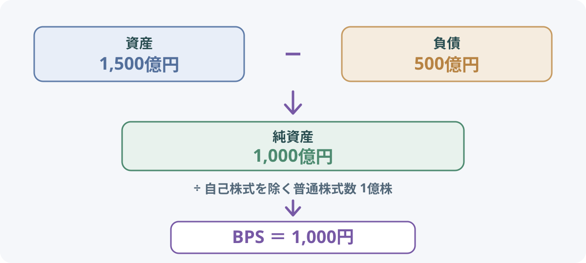

カテゴリツリーを開く
BPSとは？1株当たり純資産の計算方法と見方
BPSの意味や計算式から、純資産と株式数の関係、数字が変化する理由、EPS・PBRとの違いまで解説します。
BPSは「1株当たり純資産」を表す指標です。会社の貸借対照表に記載された純資産を、普通株式1株当たりに換算したもので、英語のBook-value Per Shareを略してBPSと呼びます。
会社全体の純資産だけでは、発行している株式数が違う企業を同じ基準で比べにくくなります。BPSに換算すると、普通株式1株に対応する純資産の金額を確認できます。ただし、BPSは現金の保有額や、会社を解散したときに受け取れる金額そのものではありません。
1. BPSとは？何を表す指標？
BPS（Book-value Per Share）は、日本語で「1株当たり純資産」といいます。決算時点の純資産を、自己株式を除いた普通株式数で割り、1株当たりの金額に換算した指標です。
例えば、普通株式に対応する純資産が1,000億円、自己株式を除く普通株式数が1億株なら、BPSは1,000円です。これは、会計上の純資産を株式数で均等に割った場合に、普通株式1株当たりいくらに相当するかを示しています。
BPSは企業の財務状態や株価評価を考えるときの材料になります。特に、株価をBPSで割るPBR（株価純資産倍率）の計算に使われます。一方、BPSだけで企業の安全性や株価の割安・割高を判断することはできません。
2. 純資産とは？資産・負債との関係
純資産は、貸借対照表に記載される資産から負債を差し引いた残りにあたります。資産は会社が保有する現金、売掛金、商品、建物、設備など、負債は借入金や買掛金など将来支払う義務のあるものです。

| 項目 | 金額 | 内容の例 |
|---|---|---|
| 資産 | 1,500億円 | 現預金、売掛金、在庫、建物、設備など |
| 負債 | 500億円 | 借入金、買掛金、未払金など |
| 純資産 | 1,000億円 | 資産から負債を差し引いた残り |
この例では、1,500億円－500億円＝1,000億円が純資産です。純資産には、株主が払い込んだ資本金や資本剰余金、会社が過去に稼いで蓄積した利益剰余金などが含まれます。
注意したいのは、純資産がそのまま現金として会社に置かれているわけではないことです。純資産に対応する資産は、現金だけでなく、設備・在庫・売掛金などさまざまな形で保有されています。また、貸借対照表上の金額と、実際に売却したときに得られる金額は一致するとは限りません。
3. BPSの計算方法と具体例
BPSの基本的な考え方は、普通株式に対応する期末の純資産を、期末の普通株式数で割ることです。分母は発行済み普通株式数から自己株式数を差し引きます。
BPS ＝ 普通株式に対応する期末純資産 ÷（期末発行済普通株式数 − 期末自己株式数）
会計基準上の厳密な算定では、純資産の部の合計額をそのまま使うのではなく、新株予約権や非支配株主持分など普通株主に帰属しない項目を調整します。まずは「普通株主に帰属する純資産を、自己株式を除いた普通株式数で割る」と理解すると、計算の意味をつかみやすくなります。
計算例：純資産1,000億円、株式数1億株の場合
| 項目 | 金額・株数 |
|---|---|
| 普通株式に対応する期末純資産 | 1,000億円 |
| 期末発行済普通株式数 | 1億1,000万株 |
| 期末自己株式数 | 1,000万株 |
| 自己株式を除いた株式数 | 1億株 |
| BPS | 1,000円 |
計算は、1,000億円 ÷（1億1,000万株－1,000万株）＝1,000円です。発行済株式数には会社が保有する自己株式も含まれるため、BPSの計算では自己株式を差し引きます。
実際の企業の決算資料では、連結・個別のどちらを基準にするか、会計基準が日本基準かIFRSかなどによって、表示名称や計算対象となる純資産の項目が異なる場合があります。企業間で比べるときは、同じ基準の数値かを確認しましょう。
4. BPSが増減する理由
BPSは純資産と株式数の両方で決まります。会社が利益を積み上げて純資産が増えるとBPSは上がる方向に動きますが、株式数が増えたり、損失や配当で純資産が減ったりすると下がる場合があります。
利益の蓄積・赤字・配当
会社が利益を上げ、その一部を社内に残すと、利益剰余金が増えて純資産が増加します。株式数が変わらなければ、BPSも上がる方向に動きます。反対に、赤字が続けば利益剰余金が減り、BPSが下がることがあります。
配当金を支払うと、会社の現金などの資産と利益剰余金が減少します。ほかの条件が同じなら、配当は純資産を減らすため、BPSを押し下げる方向に働きます。配当を受け取る株主側の利益と、会社に残る純資産の変化は分けて考える必要があります。
増資：純資産と株式数が同時に増える
会社が新株を発行して資金を調達すると、払い込まれた資金が会社に入り、純資産と株式数の両方が増えます。そのため、株式数が増えるからといって、BPSが必ず下がるわけではありません。
例えば、純資産1,000億円・株式数1億株の会社が、1株1,200円で1,000万株を新たに発行し、費用などを無視すると、純資産は1,120億円、株式数は1億1,000万株となります。BPSは1,000円から約1,018円に上がります。反対に、発行価格が発行前のBPSを下回る場合などは、既存株主にとって1株当たり純資産が低下することがあります。実際の増資では発行条件や費用、資金の使い道も確認しましょう。
| 項目 | 増資前 | 増資後（仮定） |
|---|---|---|
| 純資産 | 1,000億円 | 1,120億円 |
| 株式数 | 1億株 | 1億1,000万株 |
| BPS | 1,000円 | 約1,018円 |
自社株買い：株式数が減る一方、会社の資金も減る
会社が市場などから自社株を買い戻すと、自己株式が増え、BPSの分母となる株式数は減ります。ただし、買い戻しには会社の資金を使うため、純資産も減少します。したがって、自社株買いでBPSが必ず上がるとは限りません。
例えば、純資産1,000億円・株式数1億株の会社が、1,000万株を1株1,200円で買い戻し、ほかの変化を無視すると、純資産は880億円、株式数は9,000万株になります。BPSは約978円となり、買い戻し前の1,000円を下回ります。買い戻し価格がBPSより高いか低いかなど、条件によって結果は変わります。
株式分割：BPSは分割比率に応じて小さくなる
1株を2株に分ける2分割を行うと、株式数は原則2倍になり、BPSは半分になります。しかし、会社全体の純資産が分割によって増減するわけではなく、株主が保有する持分割合も変わりません。分割前後でBPSの金額だけを比べるときは、株式分割の影響を考慮して同じ株数基準にそろえる必要があります。
| 項目 | 分割前 | 2分割後 |
|---|---|---|
| 純資産 | 1,000億円 | 1,000億円 |
| 株式数 | 1億株 | 2億株 |
| BPS | 1,000円 | 500円 |
株式分割は1株当たりの単位を変えるものであり、それだけで企業価値や株主全体の持分が増えるわけではありません。
5. BPSとEPS・PBRの違い
BPSとEPSはどちらも1株当たりの指標ですが、見ているものが異なります。BPSは決算時点の純資産というストック、EPSは一定期間に得た利益というフローを1株当たりに換算したものです。
| 指標 | 何を表す？ | 主な計算・見方 |
|---|---|---|
| BPS | 1株当たり純資産 | 期末の純資産を1株当たりに換算 |
| EPS | 1株当たり利益 | 一定期間の利益を期中平均株式数で割る |
| PBR | 株価純資産倍率 | 株価 ÷ BPS。株価がBPSの何倍かを見る |
| PER | 株価収益率 | 株価 ÷ EPS。株価がEPSの何倍かを見る |
例えば、BPSが1,000円、株価が1,500円なら、PBRは1.5倍です。PBRはBPSを使って株価の評価水準を見る指標であり、BPSそのものが株価を示しているわけではありません。
EPSの計算や株式数の変化について詳しく知りたい場合は、EPSとは？1株当たり利益の計算方法と成長率の見方も参考になります。PBRの1倍が意味することや、低PBRをどう考えるかは、PBRとは？株価純資産倍率の計算方法と見方で詳しく解説しています。
6. BPSを見るときの注意点
- 純資産は現金ではない：純資産は資産から負債を差し引いた会計上の金額です。設備や在庫なども含むため、BPSと同じ金額を現金で受け取れるわけではありません。
- 帳簿価額と実際の価値は異なることがある：資産の売却価格や回収可能額は、貸借対照表の金額と一致するとは限りません。反対に、ブランドや技術など帳簿に十分表れない価値もあります。
- 業種によって水準が違う：金融業、製造業、IT企業などでは資産構成やビジネスモデルが異なります。異なる業種のBPSの金額だけを比べても、企業の優劣は分かりません。
- 会計基準・連結範囲を確認する：日本基準とIFRSでは表示項目や算定上の調整が異なる場合があります。連結・個別の範囲もそろえて比較しましょう。
- 純資産がマイナスの場合：債務超過などで普通株式に対応する純資産がマイナスになると、BPSもマイナスになり得ます。通常の企業比較やPBRの解釈には使いにくくなります。
- 株式数の基準日を確認する：BPSは期末時点の株式数を使う指標です。決算後に増資や自己株式の取得、株式分割などがあった場合、最新の状況と差が生じることがあります。
BPSは企業分析の基礎となる数字ですが、単独で企業の安全性や投資価値を決めるものではありません。純資産の中身、利益を生み出す力、株価との関係を合わせて確認しましょう。
まとめ
- BPSは「1株当たり純資産」で、会社の純資産を普通株式1株当たりに換算した指標。
- 基本的には普通株式に対応する期末純資産を、自己株式を除く期末株式数で割って求める。
- 利益の蓄積や赤字、配当、増資、自社株買い、株式分割などでBPSは変化する。
- 純資産は現金や清算時の受取額と同じではなく、BPSだけで企業価値や割安・割高は判断できない。
- BPSはPBRの計算に使われ、EPSとはストックとフローの違いがある。
BPSを見るときは数字の大小だけでなく、純資産の中身と株式数がどう変化したかを確認することが大切です。
参考資料
- 日本取引所グループ「1株当たり純資産（BPS）」 — BPSの定義と期末株式数の考え方。
- 日本取引所グループ「純資産」 — 純資産の基本的な意味。
- 企業会計基準委員会「企業会計基準適用指針第4号」 — 1株当たり純資産額の算定と普通株式に係る純資産額の調整。
- 日本取引所グループ「株価検索 - はじめての方へ」 — BPS・EPS・PER・PBRなどの指標の説明。